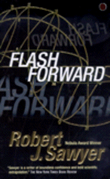

Flash Forwardby Robert J. Sawyer
publisher: Tor Science Fiction
Fiction, 320 pages | 
(book cover art, Copyright ©2000 Tor Science Fiction - scan taken from www.bn.com)
|
Return to the Book MenuPrevious|Next
Description:
Just as scientists are starting an unprecedented experiment at the most powerful particle collider in Geneva, everybody in the world passes out and has a vision. The event allows many people to see a few minutes through their own eyes - 20 years in the future! What caused the Flash Forward, what does it mean for those who don't see any vision, and how will foreknowledge of the future change the world?
Recommended for: people interested in science's impact on society (and vice versa), people interested in the paradoxes of time travel, people intrigued by Scrooge's final ghost.
Did-you-read questions:
Deadline: February 1, 2005.
These should be easy questions, but you should have the questions ready and keep an eye out during your reading. Each question should be answered with 1-2 sentences.
Note: these questions are not probably not the most important part of the book! Your essay will not have to cover these questions!
- What happens to Tamiko in the FlashForward?
- In the news, what is Cineplex/Odeon doing in response to the FlashForward?
- What is the Mosaic Project?
- What does Dimitrios Procopides do that affects the argument about the FlashForward?
- When he visits CERN, Theo's "murderer" has a larger plan. What is it, and what does he hope to accomplish for himself?
Report Questions:Deadline: Peer Review Session on February 8, 2005; paper due February 10, 2005.
You should write a 3 - 4 page essay on one of the following questions. Your essay should include examples and references to the book, unless otherwise specified. Page number references are sufficient for citing material from the primary book. If you use outside materials, cite your sources in full. If you would rather write on a different topic, you may, but clear it with Mr. Howe or Ms. Sullivan first.
- In the book, there is some discussion of whether the scientists who initiated the Flash Forward should be held responsible for the accidents that occurred while it happened, even though they could not have predicted what happened. What do you think? Use examples from the book and discuss both sides of the argument in your essay.
- What do you think about Lloyd and Michiko's relationship and how it was affected by the Flash Forward?
- Certainly, the Flash Forward is not something that is likely to happen, but do you think the book describes a realistic response to such a phenomenon?
- What do you think of the way the jade man decides who should join him?
Graphic and Presentation:
Deadline: February 21 - March 3, 2005.You will give a 10 minute presentation on both of the following:
- Convince your peers that they should (or should not) read this book. (This may include a brief summary of the book.) Give examples of what was cool or worthwhile in the book, and what you got out of it (or didn't).
- Describe a (realistic) science idea that you learned about in this book, citing information from at least 2 external sources (other than the dictionary). If you would like help choosing or understanding an idea from your book, you are invited to come talk to Mr. Howe or Ms. Sullivan.
Note: This presentation should not be just a reading of your paper!Along with this presentation, you should have a graphic that will go with it. A Power Point presentation is recommended, but if you have a special idea for a something else, such as a model, an original video presentation, or a well done drawing/ painting/ sculpture/ etc., you may do so, provided it involves a similar level of effort and polish. Speak to Mr. Howe or Ms. Sullivan first if you are considering an alternate graphic format to the Power Point.
Return to the Book MenuPrevious|Next